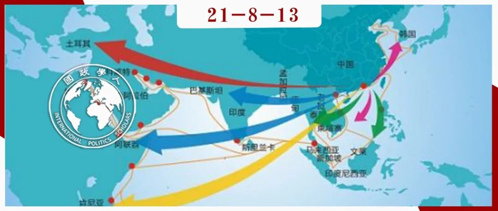

收录于合集

作品简介
作者： Andrea Ghiselli是复旦大学国际关系与公共事务学院助理教授。他还是TOChina Hub的 ChinaMed项目的研究员和项目经理。他的研究兴趣包括中国外交政策制定以及中国与中东和北非的关系。
Pippa Morgan是昆山杜克大学政治学讲师。她的研究兴趣包括国际和比较政治经济学、国际关系、中国外交政策、中国的对外援助和外国直接投资以及中非关系。
编译： 王芷汀（国政学人编译员，约翰霍普金斯大学保罗尼采高级国际关系研究院）
来源： Ghiselli, A., & Morgan, P. (2021). A Turbulent Silk Road: China’s Vulnerable Foreign Policy in the Middle East and North Africa. The China Quarterly , 1-21.
归档： 《国际关系前沿》2021年第8期，总第35期。

内容导读
当前，国际局势风起云涌，中国的海外利益面临越来越多的挑战。中国的海外利益与其安全政策之间的联系日益重要。《中国季刊》这篇文章从统计学角度探讨了在东道国安全形势恶化时，中国承包商是否以及在多大程度上减少了他们派往北非、中东和非洲之角工作的中国工人的数量。本文发现， 无论是中国使领馆发出的离开东道国的警告，还是专家对东道国局势的分析，都没有显著地影响中国工人的数量 。工人人数似乎只有在大规模暴力事件之后会锐减。这些研究结果表明，尽管中国政府进行了长达十年的努力，以提高企业在海外的安全意识，从而减少使用外交和经济上昂贵的军事手段保护他们的压力，但中国企业对海外安全风险和不确定性的接受度依旧相对较高。
文章导读
自利比亚撤侨以来，在不稳定和风险国家的海外中国企业正日益影响着中国走向全球的外交政策。由此，中国开始考虑军事因素以保卫其“动荡的边境”，即其在全球遥远的地区受到威胁的国家利益。在派遣本国公民出国工作的问题上，中国企业是否以及如何应对安全风险和不确定性，答案至关重要。事实上，这些企业越不谨慎，其资产，尤指其员工，就越有可能成为海外不稳定的受害者，从而推动中国政策制定者加速推出新政策。
本文使用有关中国公民2004至2017年在中东、北非和非洲之角的存在和外交活动的新数据和信息，对这一重要主题进行了统计探索。对中国企业而言，这是一个日益重要的区域，但同时也是一个政治高度不稳定的地区。本文发现，该地区国家间和/或国家内部暴力事件发生后，中国工人的数量显著减少。然而，出乎意料的是，鉴于中国政府对海外中国公民安全的高度关注，无论是中国使领馆发出的离开东道国的安全警告，还是专家对该地区潜在不稳定性分析，都未显著影响中国企业选择带入该地区的中国工人的数量。这些统计结果得到了轶事证据的支持，不仅表明中国企业往往比较愿意接受风险，而且这种在潜在风险国家开展经济活动的方式在2011年阿拉伯之春的冲击之后并没有发生显著变化。
本研究旨在对现有的中国外交政策研究做出三个贡献。 第一 ，本文阐明了中国决策者决定考虑军事解决方案以保护国家海外利益背后的动力。一方面，中国长期以来奉行既不动用军队也不介入棘手安全问题的外交政策。另一方面，中国军队缺乏海外经验，并且不愿“干涉性”地使用武力，即在与中国主权和领土的传统防御无关的任务上使用武力。这些因素可能会使就使用军事方案达成协议变得困难。本研究表明，由于之前试图影响中国企业海外行为的低成本监管措施并不奏效，中国工人在政治不稳定事件中成为暴力受害者的可能性仍然很大，这削弱了中国政府为解决海外安全风险寻求非军事解决方案的努力。 第二 ，本研究使用了新的数据和变量来探索中国企业应对海外安全威胁的行为。最重要的是，本文对中国承包商派遣到国外的劳动力数量进行了分析。 第三 ，本文创新性地采用定量方法来研究海外经济活动、安全和中国外交政策之间的关系。这种分析对于理解中国政策制定者面临的问题的范围是必要的。
文章由四部分构成。首先，本文介绍了分析框架。其次，本文描述了数据来源和方法。再次，本文展示了研究结果并概述了对这一结果可能的解释。最后，本文为进一步的研究提供了一些结论和建议。
01
理论与假设
在可能不安全的地方开展海外业务会给人员和资产带来可预见和不可预见的危险。瞬息万变的世界为企业带来了新的盈利机会，但这也意味着企业对未来事件和潜在威胁的了解可能并不完善。
自2005年《国家涉外突发事件应急预案》获批以来，中国政府制定了日益完善的监管框架，以确保中国企业关注风险和不确定性，尤其是员工安全。其中，中国政府尤其专注于两个相互关联的目标。第一个目标是明确企业管理人员对企业员工在国外的安全负全责。第二个目标是确保国家机构在支持企业管理安全风险方面发挥积极作用。中国政策制定者在中国公民卷入危机时将重点放在规避海外危机造成的政治、经济和外交成本。这表明中国正试图建立一个针对企业接受不确定性的高处罚成本的监管框架，从而促使企业完善信息，并同时为海外的中国企业提供信息。
由此，本文提出以下假设：
假设一 在其他条件相同的情况下，当中国外交部发出禁止前往和/或留在特定东道国的安全警告时，中国企业将显著减少中国工人的相对数量。
此假设旨在直接测试中国企业是否使用和/或对外交部提供的有关东道国严重威胁的信息做出反应。
假设二 在其他条件相同的情况下，当东道国所感知的稳定性下降时，中国企业将显著减少中国工人的相对数量。
此假设旨在测试中国企业是否使用有关东道国稳定性下降的专家信息和/或根据其做出反应。
假设三 在其他条件相同的情况下，当东道国的暴力事件量级增加时，中国企业将大幅减少中国工人的相对数量。
此假设旨在评估，当不考虑潜在风险信息的可访问性和质量时，一个国家的安全局势实际恶化时中国企业的行为。
02
数据与方法论
地理和时间范围
为了对上述假设进行实证检验，本文分析了2004至2017年26个东道国的数据集，其中包括中东（巴林、伊朗、伊拉克、以色列、约旦、科威特、黎巴嫩、阿曼、卡塔尔、沙特 阿拉伯、叙利亚、土耳其、阿拉伯联合酋长国和也门）、北非（阿尔及利亚、摩洛哥、埃及、苏丹和突尼斯）、东非（吉布提、埃塞俄比亚、索马里、南苏丹和厄立特里亚）以及西非（马里）。
中国工人——因变量
本文的因变量是每个国家每年工程项目的中国合同工的数量（包括工程合同、劳务合同和设计咨询服务合同）。
东道国的信息、不稳定和暴力——自变量
为了检验假设一，本文从中国大使馆网站收集了新数据，创建了一个虚拟变量，记录了中国外交部和东道国使领馆发出的警告。为了检验假设二，我们使用世界银行全球治理指标中的“政治稳定性和不存在暴力/恐怖主义”指数。为了检验假设三，本文利用系统和平中心（Center for Systemic Peace）编制的“主要政治暴力事件”数据集。同时，本文控制了可能影响中国承包商选择带入工人数量的各种其他因素不变，包括中国工程合同在每个国家/年的总财务价值、东道国对外国工人的开放程度和从中国进口工人是否有意义等因素。
模型
本文使用具有稳健标准误差固定效应泊松模型。国家固定效应考虑了未观察到的时不变因素（time-invariant factor），而泊松模型考虑了计数数据可能不是正态分布的事实。用于分析计数数据的替代方法包括负二项式模型（negative binomial model）和零膨胀模型（zero-inflated model）。
03
结果与讨论
本文没有发现明显的证据表明中国企业选择带入该地区的中国工人的数量会根据中国使领馆发出的离开东道国的安全警告做出反馈；中国企业减少派遣到被认为不太稳定、更容易发生暴力事件的国家的工人数量；当东道国发生实际暴力事件时，中国承包商带入的工人数量（或完全撤离现有工人）明显减少。2011年阿拉伯之春后，中国政府在鼓励中国企业关注安全风险和不确定性方面做出更大努力，如果将该因素的潜在影响纳入考虑后，该结果的迹象或方向并无实质性变化。这一结果指出，中国承包商至少在某种程度上未能遵守中国政府的规定，为其海外工人的安全负责。除非真正发生重大暴力事件，否则他们可能愿意容忍或无法识别安全风险。此外，定性证据表明中国企业对在东道国工作的外交官的警告反应迟钝。因此，仅仅依靠企业来解决保护海外中国公民的问题似乎不是一个非常有效的解决方案，中国的外交政策可能仍然容易受到国外不稳定因素的冲击。
可能的解释
首先，根据中国对外直接投资的文献，与国家关系密切的中国企业可能更能容忍道德风险问题导致的不确定性。国有企业管理者认为国家会在不利情况下提供进一步的支持。其次，一些研究表明，在试图确保中国企业在海外按照政府的意愿行事时，中国政府面临着委托代理问题。其他的补充解释还包括，管理者由于相信自己在国外积累的经验导致对风险的忽视和中国企业对东道国政府对政治不稳定的应变能力的过高估计等。
04
结论
其他更保守的政策的失败可能会促使政策制定者在必须“加快步伐”和考虑军事因素介入达成新的共识。2000 年代中期以来，中国政府实施了一项旨在降低中国企业接受风险和不确定性的政策并推动商务部和外交部为中国在海外企业提供培训和及时的信息。然而，本研究表明，工人人数似乎只有在大规模暴力事件之后会锐减。无论是中国使领馆发出的离开东道国的警告，还是专家对东道国局势的看法，都没有显著地影响中国工人的数量。而这些安全警告可以帮助避免在最后一刻的撤侨或避免让他们的员工卷入战争或恐怖袭击。因此，由于中国的外交政策仍然容易受到第三国不稳定因素的影响，不能排除其未来在海外扩大安全存在的可能性。最后，本文围绕企业与政府之间的关系以及文化因素讨论了一些可能的解释，但仅靠统计分析并不能阐明为什么中国企业对风险和不确定性有如此高的容忍度，这又是一个值得研究的问题。
译者评述
中国对海外的人力和经济的安全政策，实质是中国对其海外利益的维护，这关系到国家发展的安全大局。从另一层面来说，由于海外利益涉及到第三国利益，对其他国家的发展和国际秩序会产生一定的影响，因此中国对自身海外利益的维护也是决定其能否和平崛起的战略性议题。
本文作者认为，中国的外交政策在“一带一路”沿线国家十分脆弱，尤其受到来自中东、北非地区国际暴恐活动的影响，为维护海外安全利益，中国势必会加强军事存在。在2016年“两会”记者会上，就维护中国海外利益的议题，中国外交部部长王毅指出“中国绝不走传统大国的扩张老路，也不会搞任何强权政治。我们要探索一条符合时代潮流，得到各方欢迎，具有中国特色的维权之路”。中国将通过承担更多国际安全义务来维护其海外安全利益，（在响应当事国愿望前提下）通过必要的基础设施建设、保障能力建设、以及与世界各国深化安全合作这三方面来维护不断增长的海外利益。
从国际制度的角度来说，在全球化时代，中国需要通过在国际制度上的参与、改革和构建来维护其海外利益。首先，增加国际制度的参与度有利于在国际社会的维度上明确其国际身份、界定国家利益。其次，增加参与度将使中国获得改革国际制度的机会，这有助于弥补由于国际制度合法性不足和有效性不足，而导致中国维护其海外利益时处于非常被动的地位。最后，针对现行国际制度的空白，建设性地构建国际制度将为国家带来一定的主动性。例如，中国构建的上海合作组织，为维护和保障地区的和平、安全与稳定带来了巨大的贡献，从而也在很大程度上，保护了中国公民及企业在海外的安全利益。
最后，效仿西方国家一味的军事干预，并不能够有效解决在外公民的安全问题。根据“共商、共建、共享”的全球治理观，安全应该是互助的，并达到双赢的结果。遇到突发事件，使领馆可以向在海外公民提供信息及安全警告（这在本文中被作者认为是低效的），但不仅限于此。更重要的是，海外使领馆应建立一套机制，在危机时能够及时跟当地政府或者有关部门联络，从国家合作的角度，通过外交手段、和平方式，借助当事国的国家机器对在外公民的安全利益进行维护。
参考文献
[1]“王毅谈海外利益保护：探索中国特色的维权之路”，2016，http://ekaterinburg.china- consulate.org/chn/zyxw/t1345905.htm
[2]王发龙.中国海外利益维护路径研究:基于国际制度的视角[J].国际展望, 2014(03):51-67+155-156.
[3]“中国人在海外的利益如何维护？”，2020，https://www.shxwcb.com/482496.html
词汇整理
National Overseas Emergency Response Plan 国家涉外突发事件应急预案 ****
[whoever] sends personnel abroad is responsible for them 谁派出，谁负责 ****
Moral hazard 道德风险 ****
State-owned enterprise (SOE) 国有企业 ****
Risk aversion 风险规避 ****
责编 | 程朵依 姚寰宇
排版 | 黄晨蕊 杜丛竹
文章观点不代表本平台观点，本平台评译分享的文章均出于专业学习之用, 不以任何盈利为目的，内容主要呈现对原文的介绍，原文内容请通过各高校购买的数据库自行下载。
好好学习，天天“在看”
国政学人
支持学术公益与知识传播
微信扫一扫赞赏作者 __赞赏
已喜欢，对作者说句悄悄话
取消 __
发送给作者
发送
最多40字，当前共字
上一页 1/3 下一页
长按二维码向我转账
支持学术公益与知识传播
受苹果公司新规定影响，微信 iOS 版的赞赏功能被关闭，可通过二维码转账支持公众号。